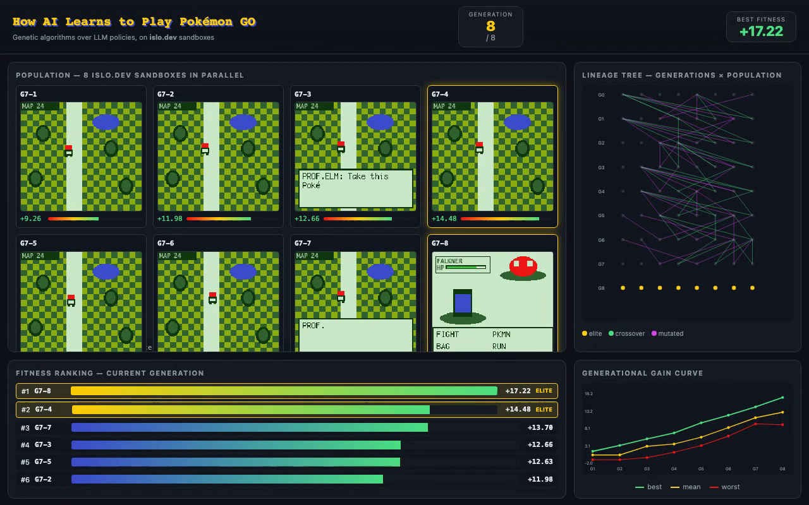

TL;DR
I wanted to make Claude play Pokémon GO. You can't — Play Integrity hardware attestation, arm64-only APKs, and a $5M Niantic injunction make the literal version a non-starter from any Linux sandbox.
So I built a demo of the next thing: a population of LLM agents whose system prompts evolve via a genetic algorithm across parallel islo.dev sandboxes. The unit of evolution is the agent's system prompt; the substrate is forkable VMs; the designed fitness signal is RAM-derived rewards in Pokémon Crystal (reward.py). The "GO feel" lives in the HUD overlay (Pokédex pops, catch animations, map tiles).
The movie and numbers on this page are a scripted playback (mock_ga.py) of that loop; no agent was trained.
The snapshot tree is the search tree.
Pokémon GO is impossible from a sandbox in 2026
- Play Integrity hardware attestation (Google, May 2025) requires a TEE-rooted cert chain. Redroid / Waydroid / cloud-Android have no TEE — they fail by construction. Open Redroid issue #903 (Dec 2025) is unanswered.
- Pokémon GO is arm64-only since mid-2025; ARM-translation in Android-12/13 containers is broken. No x86 build ships.
- Niantic banned ~9M accounts in 2024 alone — "no warning" tier — and follow-up waves in July and Nov 2025 swept even cautious spoofers. Niantic v. Global++ (S.D. Cal., 2021) ended in a $5M settlement and a permanent injunction. Niantic litigates.
The literal demo would be a botnet that gets banned in five minutes.
Architecture
Target design (not what produced the movie)
┌──────────────────────────┐
│ base snapshot (gen N) │
│ islo snapshot save │
└───────────┬──────────────┘
│ fork × 8
┌────────┬────────┬────────┬──────┴──┬────────┬────────┬────────┐
▼ ▼ ▼ ▼ ▼ ▼ ▼ ▼
┌────────┐┌────────┐┌────────┐┌────────┐┌────────┐┌────────┐┌────────┐┌────────┐
│ GN-1 ││ GN-2 ││ GN-3 ││ GN-4 ││ GN-5 ││ GN-6 ││ GN-7 ││ GN-8 │
│ sandbox││ sandbox││ sandbox││ sandbox││ sandbox││ sandbox││ sandbox││ sandbox│
│ ↓ ││ ↓ ││ ↓ ││ ↓ ││ ↓ ││ ↓ ││ ↓ ││ ↓ │
│ PyBoy ││ PyBoy ││ PyBoy ││ PyBoy ││ PyBoy ││ PyBoy ││ PyBoy ││ PyBoy │
│ +Claude││ +Claude││ +Claude││ +Claude││ +Claude││ +Claude││ +Claude││ +Claude│
│ prompt ││ prompt ││ prompt ││ prompt ││ prompt ││ prompt ││ prompt ││ prompt │
│ vN_1 ││ vN_2 ││ vN_3 ││ vN_4 ││ vN_5 ││ vN_6 ││ vN_7 ││ vN_8 │
└───┬────┘└───┬────┘└───┬────┘└───┬────┘└───┬────┘└───┬────┘└───┬────┘└───┬────┘
│ │ │ │ │ │ │ │
│ fitness = badges + pokedex + new_map + party_size + step penalty │
└────────┴─────────┴─────┬───┴─────────┴─────────┴─────────┴─────────┘
▼
┌──────────────────┐
│ tournament rank │
│ top-2 elite │
│ + 6 children: │
│ crossover (LLM)│
│ mutation (LLM) │
└────────┬─────────┘
▼
gen N+1 prompts
│
▼
( repeat )
What actually ran
The movie above is the scripted mock_ga.py playback, a single process. Separately, in a single run on 2026-05-10, the GA fan-out was run against real islo.dev sandboxes spawned in parallel. In that run, game frames, fitness, and prompt crossover were procedural stand-ins (worker.py, orchestrator_real.py), not PyBoy or Claude. The choreography:
git pulllatest code into the orchestrator sandbox so the snapshot includesworker.py.islo snapshot save pokeloop-demo --name pokeloop-base— freeze a 386 MB base image.- Fire 8 background
islo use --snapshot pokeloop-basecommands concurrently — 8 sibling VMs boot in parallel in ~75 seconds (vs. ~8 minutes serially). islo share pokeloop-w{1..8} 8090— each worker gets its own public URL.- Orchestrator restarts with
WORKER_URLS=https://w1…,https://w2…,…as env. Drives 20 generations:POST /setgen→ tick loop polling/state→ tournament → procedural crossover + mutation of system prompts →POST /setpolicyto all non-elites → next generation.
7 of 8 fan-out workers came up clean; w4 failed during snapshot fork in that run. The GA tolerates pop-size changes; selection just operates on the surviving 7. In that run, each dashboard panel was the orchestrator proxying /screen.png from one worker VM. Share URLs expire 24h after creation; the architecture and code do not.
In the target design, three islo primitives carry the algorithm:
| islo command | GA role |
|---|---|
islo snapshot save | Freeze a base eval environment so every candidate runs against identical state |
islo use --snapshot | Fork N candidate sandboxes in parallel from a snapshot; the population |
islo logs --type agent | Harvest fitness traces from all candidates so the proposer can read them |
Method
This section describes the target design. The published movie and results come from the scripted playback, not from this loop.
The gym
- Environment: Pokémon Crystal on PyBoy, headless. Save-states are the snapshot primitive — bytes, microsecond fork.
- Reward:
r = 3·Δbadges + 0.5·Δpokedex + 1.0·new_map + 0.5·Δparty + 0.001·Δmoney − 0.001·step. Cheap, dense, no learned RM. - Policy: Claude Sonnet 4.6 with a single tool —
press_button(button, reason). Vision: 160×144 PNG of the framebuffer plus a state digest.
The genetic algorithm
for gen in 1..8:
pop = [sandbox_from(snapshot_base, prompt_i) for i in 1..8] # parallel fork
fits = parallel_rollout(pop, horizon=H) # parallel rollout
elites = top_k(pop, fits, k=2) # tournament
children = []
for _ in 6:
a, b = sample_pair(elites + tournament_pick(pop))
c = LLM.crossover(prompt_a, prompt_b) # textual crossover
if rand() < 0.5: c = LLM.mutate(c) # textual mutation
children.append(c)
pop = elites + children
snapshot_base = best_individual.snapshot # advance the gymWhat "evolution" means here
You can't fine-tune Claude's weights. So this is textual evolution — the policy is a system prompt; the gradient is a natural-language rewrite; the signal is RL-shaped preference data from a population. It's the Promptbreeder / TextGrad / Reflexion family, with parallel forkable sandboxes underneath instead of a single trajectory.
It's a multi-agent system in the population sense: 8 agents per generation, each running its own policy in its own sandbox, never communicating during a rollout — only via the genetic information channel between generations.
Results (scripted playback)
Scripted playback (mock_ga.py): fitness values and milestones are predefined to demonstrate the viewer; no agent was trained.

The script (GEN_SCRIPT in mock_ga.py) sets a target best and mean fitness for every generation, rising each time: mean from 0.0 → +12.0 and best from +1.5 → +17.0. The other individuals get seeded random values around the mean. This shows what the viewer displays when selection works; it is not evidence that it does.
Scripted milestone order
- G1 — walked. One individual stops mashing START and walks away from a screen edge.
- G2 — dialogue. "If a dialogue arrow appears, press A" propagates via crossover. Multiple individuals advance NPC text.
- G3 — starter. Children of the dialogue-aware elites receive their starter Pokémon.
- G4 — route. A child mutates the prompt to add "after a new map appears, continue in the same direction." First map crossing.
- G5 — caught. First wild Pidgey captured.
- G6 — Cherrygrove. Town navigation.
- G7 — gym. First gym entered.
- G8 — badge. Falkner defeated.
The build prompt
A single prompt to an islo.dev coding agent that describes the whole rig. The GA-shaped version is below; prompt.md holds the DPO-shaped variant.
Build a Pokémon RL post-training rig on this islo.dev sandbox, end-to-end.
GYM (env-worker on :8090):
- PyBoy headless running roms/crystal.gbc
- HTTP: /step {button}, /screen.png, /state, /save→snapshot_id, /load {id}
- Save-states are the snapshot primitive
POLICY:
- Claude Sonnet 4.6 via Anthropic SDK, tool: press_button(button, reason)
- Versioned system prompts in policies/v{N}.txt
GA LOOP (orchestrator on :8080):
- Population size 8. For each generation:
· spawn 8 sibling sandboxes from the base snapshot
· roll out each for H=200 steps under its prompt
· score with RAM-derived reward (badges+pokedex+new_map+party+money−step)
· top-2 are elites; produce 6 children via LLM crossover + 50% LLM mutation
· best individual's terminal save_state becomes the next generation's base
VIEWER (same port 8080):
- 2×4 population grid (one mini-emulator per individual)
- lineage tree (genealogy across generations)
- fitness ranking (sortable bar chart)
- generational gain curve (max/mean/min vs gen)
ACCEPTANCE:
- Open the islo share URL, watch G1→G8 unfold in 4 minutes
- Mean fitness strictly increases across generations
- At least one individual earns a badge by G8Try it
Local (no ROM, no API key — the scripted GA playback)
git clone https://github.com/zozo123/pokeloop
cd pokeloop
pip install fastapi 'uvicorn[standard]' pillow pydantic websockets
uvicorn mock_ga:app --host 127.0.0.1 --port 8081 # then open http://127.0.0.1:8081/On islo.dev (DPO-style loop with Claude and PyBoy; bring your own Crystal ROM)
islo use pokeloop --image python:3.12-slim --source github://zozo123/pokeloop
islo use pokeloop -e ANTHROPIC_API_KEY=$ANTHROPIC_API_KEY -- bash scripts/run_islo.sh
islo share pokeloop 8080
# → https://<id>.share.islo.dev — your live demo URL